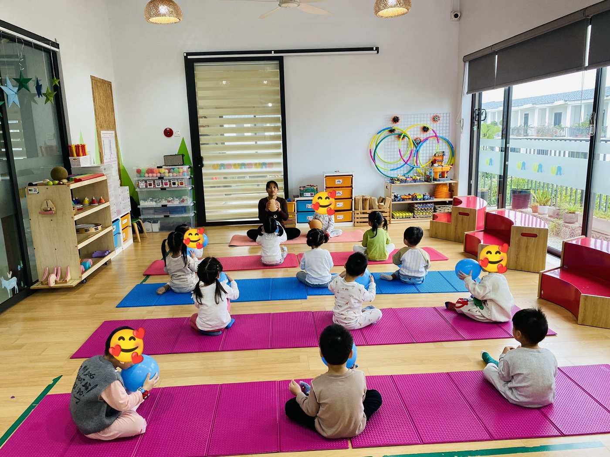

Dành cho HLV
Tốt nghiệp HLV Yoga trẻ em 30 giờ: tìm lớp dạy đầu tiên từ đâu?

“Chị ơi, em học xong rồi. Giờ em bắt đầu từ đâu ạ?”
Đây là tin nhắn cô nhận được nhiều nhất sau mỗi khóa học. Người gửi có khi là cô giáo mầm non, có khi là mẹ bỉm đang ở nhà với con nhỏ, có khi là giáo viên tiếng Anh, có khi là người đã tập yoga nhiều năm và muốn làm nghề. Ai cũng chung một cảm giác. Biết dạy rồi. Nhưng lớp ở đâu?
Bài này Sophia viết lại những bước cô thấy đi được, và cả những chỗ dễ vấp. Ở đây không có công thức kiếm tiền nhanh. Chỉ có từng bước nhỏ, đi cho chắc.
Trước khi đi tìm lớp: dạy thử mười buổi đã
Giấy chứng nhận cho biết mình đã học. Sự tự tin thì đến từ số giờ đứng trước các con thật.
Trước khi gõ cửa bất kỳ trường nào, cô hay gợi ý học viên dạy thử khoảng mười buổi, không lấy tiền, cho một nhóm nhỏ quen biết: con mình, cháu mình, ba bốn bé hàng xóm, hay chính lớp mình đang chủ nhiệm. Mười buổi đủ để gặp gần hết những tình huống “khó”. Bé khóc không chịu vào thảm. Bé chạy vòng quanh phòng. Bé không chịu nằm thư giãn. Cả lớp cười không dừng được.
Sau mỗi buổi, ghi ba dòng: điều gì chạy tốt, điều gì chưa, lần sau đổi gì. Nhà tâm lý học Anders Ericsson gọi kiểu tập có mục tiêu, có phản hồi, có điều chỉnh này là luyện tập có chủ đích, và cho thấy nó làm nên khác biệt hơn nhiều so với chỉ lặp lại cho đủ giờ (Ericsson và cộng sự, Psychological Review, 1993). Dạy yoga cho trẻ cũng vậy. Mười buổi có ghi chép đáng giá hơn ba mươi buổi dạy cho xong.
Nếu bố mẹ đồng ý, có thể quay lại vài đoạn ngắn. Những đoạn ấy sau này thành video giới thiệu của mình. Khi đăng ở bất cứ đâu, mặt các bé luôn được che, kể cả khi bố mẹ đã cho phép.

Một bộ hồ sơ gọn, đủ để người ta tin
Hiệu trưởng hay chủ trung tâm thường bận. Hồ sơ càng gọn càng dễ đọc. Cô thấy năm thứ này là đủ:
- Lời giới thiệu năm dòng. Mình là ai, học yoga trẻ em ở đâu, đã dạy thử bao nhiêu buổi, dạy độ tuổi nào, và vì sao mình làm việc này. Câu cuối cùng là câu người ta nhớ nhất.
- Ảnh giấy chứng nhận.
- Một giáo án mẫu 30 phút, gói trong một trang giấy.
- Một video 1 đến 2 phút từ buổi dạy thử, mặt các bé đã che.
- Hình thức dạy và khung giá (nói kỹ ở phần dưới).
✅ Mình đã sẵn sàng đi dạy chưa?
Tick vào từng việc đã xong. Trang sẽ nhớ trên máy của bạn để lần sau mở lại xem tiếp.
🌼 Đủ cả mười. Đến lúc gõ cửa rồi đó!
Năm nơi có thể bắt đầu
Không có nơi nào “tốt nhất”. Chỉ có nơi hợp với hoàn cảnh của mình lúc này: nhà ở đâu, rảnh giờ nào, thích lớp đông hay lớp nhỏ. Chạm vào từng ô để xem.
🗺️ Mình hợp với nơi nào?
Trường mầm non
Nhiều trường đang có các môn ngoại khóa như múa, võ, vẽ. Yoga có thể là một môn như thế.
- Cách bắt đầu: hẹn gặp ban giám hiệu, mang hồ sơ, xin dạy thử miễn phí một buổi cho một lớp.
- Thuận lợi: các con có sẵn, trường lo việc thông báo cho phụ huynh.
- Cần để ý: lớp thường đông, dạy theo lịch của trường, phối hợp với cô chủ nhiệm. Hỏi rõ ngay từ đầu cách thu và chia học phí.
Trung tâm, câu lạc bộ, nhà văn hóa
Trung tâm năng khiếu, trung tâm tiếng Anh, nhà thiếu nhi, phòng tập yoga người lớn có khung giờ trống cuối tuần.
- Cách bắt đầu: gửi hồ sơ, đề xuất một lớp thử cuối tuần. Với phòng tập yoga, lớp cho con của chính các hội viên thường dễ mở nhất.
- Thuận lợi: có phòng, có người lo tuyển sinh, mình tập trung chuyên môn.
- Cần để ý: thỏa thuận rõ ai làm gì, chia thế nào, lớp tối thiểu bao nhiêu bé thì mở.
Lớp nhỏ ở khu mình
Bốn đến tám bé ở sảnh chung cư, phòng sinh hoạt cộng đồng, bãi cỏ công viên, hay một phòng trống trong nhà mình.
- Cách bắt đầu: đăng một buổi tập thử miễn phí trên nhóm Zalo, Facebook của cư dân. Bố mẹ ngồi xem cùng con.
- Thuận lợi: gần nhà, lớp nhỏ nên dễ giữ, bố mẹ giới thiệu cho nhau.
- Cần để ý: xin phép ban quản lý khi dùng không gian chung. Lớp trên sáu bé thì nên có thêm một người lớn phụ. Ngoài trời thì tránh giờ nắng gắt.
Online
Hợp với bé từ khoảng 5 tuổi trở lên có bố mẹ ngồi cạnh, hoặc lớp bố mẹ tập cùng con.
- Cách bắt đầu: một nhóm nhỏ quen biết, buổi ngắn 20 đến 30 phút.
- Thuận lợi: không mất thời gian đi lại, dạy được cả bé ở xa.
- Cần để ý: nhiều trò chơi hơn, ít lời hơn. Nhắc bố mẹ dọn khoảng trống quanh thảm. Không đăng tên, hình các bé trên Zoom ra ngoài.
Lồng vào nghề đang làm
Đây thường là bước dễ nhất, vì các con và sự tin tưởng đã có sẵn.
- Cô giáo mầm non: mười phút yoga mỗi sáng, hoặc một bài thở sau giờ ngủ trưa.
- Giáo viên tiếng Anh: mỗi tư thế đi kèm vài từ vựng, vừa tập vừa học (xem thêm tiết học yoga tiếng Anh).
- Mẹ bỉm: lớp mẹ và bé, bắt đầu từ chính con mình và nhóm bạn của con.

Gõ cửa: một tin nhắn ngắn, một buổi dạy thử
Cách mở cửa nhẹ nhàng nhất mà cô biết là xin một buổi dạy thử. Không cần nói nhiều để thuyết phục. Cứ để các con, các cô, các bố mẹ tự nhìn thấy.
Tin nhắn đầu tiên thì nên ngắn, lịch sự, nói rõ mình là ai và mình muốn gì. Điền vài ô dưới đây, trang sẽ soạn sẵn một tin để bạn chỉnh theo ý mình.
✉️ Soạn tin nhắn giới thiệu
Buổi dạy thử: dạy như thể đó là lớp thật
Đến sớm mười lăm phút. Xem phòng, cất những đồ dễ vỡ, mở cửa cho thoáng, trải thảm. Một tiết 30 phút đủ năm phần: chào nhau, khởi động, câu chuyện bằng tư thế, trò chơi thở, thư giãn. Chọn một trò chơi “chắc ăn” mà mình đã dạy đi dạy lại nhiều lần trong mười buổi dạy thử, chẳng hạn một trò trong 20 trò chơi trong lớp Yoga.
Hết giờ, xin năm phút hỏi cô chủ nhiệm hoặc bố mẹ: các con thích nhất đoạn nào, chỗ nào chưa ổn. Ghi lại. Hỏi phản hồi không làm mình yếu đi. Nó cho người ta thấy mình làm nghề nghiêm túc.
Báo giá: nói rõ từ đầu, viết ra thành chữ
Sophia không đưa một con số chung ở đây. Học phí mỗi nơi mỗi khác: thành phố hay huyện, trường công hay trường tư, lớp đông hay lớp nhỏ. Cách cô hay tính là cộng đủ mọi thứ mình bỏ ra: giờ dạy, giờ đi lại, giờ soạn bài, đồ dùng. Rồi so với mặt bằng các lớp năng khiếu như múa, võ, vẽ quanh khu đó. Hỏi thăm vài nơi là biết.
Có những điều cô luôn viết rõ, dù chỉ là một tin nhắn Zalo hai bên cùng đồng ý:
- Số buổi mỗi tháng, mỗi buổi bao nhiêu phút.
- Sĩ số tối đa của một lớp.
- Học phí bao nhiêu, ai thu, thanh toán ngày nào.
- Nghỉ lễ, nghỉ ốm thì sao, dạy bù thế nào.
- Ai có mặt cùng lớp: cô chủ nhiệm, bố mẹ hay người phụ.
- Có được chụp ảnh, quay video các bé không, và đăng ở đâu.
Rõ ràng từ đầu là cách giữ tình cảm lâu dài. Không ai phải ngại khi nhắc chuyện tiền.
Nói thật là cách giới thiệu bền nhất
Trong tám bậc của yoga, bậc đầu tiên là giới, những điều mình giữ khi sống với người khác. Hai điều đầu tiên trong đó là không làm hại và trung thực. Với người đi dạy, trung thực bắt đầu ngay từ lời giới thiệu lớp học.
Cô không hứa với bố mẹ rằng yoga sẽ “chữa tăng động”, “giúp con cao thêm” hay “hết biếng ăn”. Cô kể điều mình thật sự thấy: các con được vận động vui, biết thở chậm lại, biết nằm yên vài phút, biết chờ đến lượt. Nếu một bé có vấn đề về sức khỏe hay phát triển, yoga là một phần đi cùng, còn bác sĩ và chuyên gia vẫn là người bố mẹ cần hỏi. Lời hứa nhỏ mà giữ được, bố mẹ sẽ nhớ lâu hơn lời hứa lớn.
Và một điều nữa. Người dạy cũng cần được nuôi dưỡng. Một HLV có vài phút thở chậm mỗi sáng, cột sống được vươn dài, giấc ngủ đủ, sẽ mang vào lớp một sự bình an mà không giáo án nào viết ra được. Các con cảm nhận điều đó trước khi nghe mình nói câu nào.
Kế hoạch 30 ngày đầu tiên
Đọc nhiều mà chưa bắt đầu thì lớp vẫn chưa có. Đây là những việc cô gợi ý cho tháng đầu sau khóa học. Làm xong việc nào, bạn đánh dấu việc đó. Trang sẽ nhớ trên máy của bạn.
🗓 30 ngày, từ chứng nhận tới lớp đầu tiên
Tuần 1 · Chăm mình và soạn bài
Tuần 2 · Dạy thử với người thân
Tuần 3 · Gõ cửa
Tuần 4 · Lớp đầu tiên
Giữ lớp sau buổi đầu tiên
Mỗi tháng, gửi bố mẹ vài dòng: các con đã tập những gì, một bài thở bố mẹ có thể làm cùng con trước giờ ngủ. Thỉnh thoảng một tấm ảnh đẹp, mặt các bé đã che. Những dòng nhỏ ấy cho bố mẹ thấy con mình đang được để ý.
Lớp đông lên chậm là chuyện bình thường. Một lớp năm bé vui vẻ, đi học đều, thường là nơi những lớp sau bắt đầu, vì bố mẹ hay rủ nhau.
Điều cô muốn nói với học viên mới
Ai cũng bắt đầu từ một lớp nhỏ. Một tấm thảm, vài bạn nhỏ, một quả chuông.
Đi chậm cũng được. Miễn là sau mỗi buổi, các con ra về nhẹ nhõm hơn lúc đến.
🌿 Muốn bắt đầu con đường này?
Khóa Đào tạo Huấn luyện viên Yoga trẻ em 30 giờ của Sophia: học qua video quay sẵn 3.690.000đ, hoặc học online qua Zoom trực tiếp cùng cô 8.000.000đ. Học viên đã học xong mà còn băn khoăn khi đi tìm lớp, cứ nhắn cô.
Đọc tiếp: Kỹ năng đứng lớp yoga trẻ em, Giao tiếp với trẻ trong lớp yoga và Yoga trẻ em không phải yoga người lớn thu nhỏ.
📚 Tài liệu tham khảo
- Ericsson KA, Krampe RT, Tesch-Römer C. The role of deliberate practice in the acquisition of expert performance. Psychological Review, 1993;100(3):363–406.
- Patañjali. Yoga Sutra, chương II, câu 30 đến 31 (năm điều giới: ahimsa, satya, asteya, brahmacharya, aparigraha).